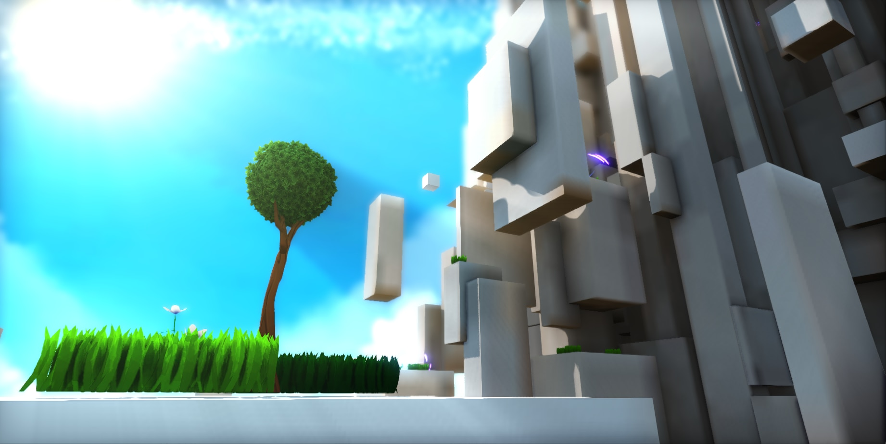
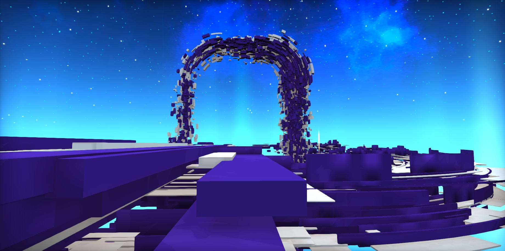

I'm finding myself in a season where it's difficult to find rest. There are so many things, good and bad, that I want to pour my time and effort into, but I'm feeling as though I'm continuously running on fumes. I thought maybe, rather than work on a hobby project or bast through a self-improvement book, that taking the time to reflect and write on this year might be a better option. There's a good chance this blog post will just sit in a drafts folder and never be published, but it can't hurt to try.
What have I done this year?
Game development wise, two main responses come to mind - The Factory Reset Jam and my Hat in Time maps. In hindsight, these projects didn't feel like big undertakings. They didn't require nearly the amount of problem solving that a typical game project would have. But I look back on them with a good sense of satisfaction. Making Hat in Time mod maps is like playing with Legos for me. It's a lot more fun than it is challenging. And I loved getting the opportunity to explore a style of platforming that really fascinates me, with the abstracted and semi-procedural level generation that you can create quite simply with Blender.


The Factory Reset Jam though, seemed to satisfy something entirely different in me that I wasn't expecting it to.
What didn't I finish this year?
The unfortunate yet all too familiar truth is that there are projects that I start and simply put down for one reason or another. I still enjoy the ideas behind them, but it remains to be seen if I will find the time/energy/joy/motivation to see any of them through to the end:
- Imagine the Characters: A riff on one of my favorite things made by mut. My daughters loved reading/playing our printed version together, so I thought it might be fun to make a fork and add a green character to see how they play it together. I still chip away at this on rare occasion, but it's pretty far on the back burner. I want to start getting them involved in creating the scenes and levels.
- Perspectives
FollySoft
Another notable thing I did this year was change my online handles to something I felt was more of a genuine reflection of my creative work and practice. It's hard for me to think of ways to describe what "FollySoft" means to me as a name without making this post much longer than I think I can manage, but I did start writing a living manifesto that I'm hoping will help solidify it into my own mind and perhaps the minds of others. You can find it on the home page of my github.io site, or over here.